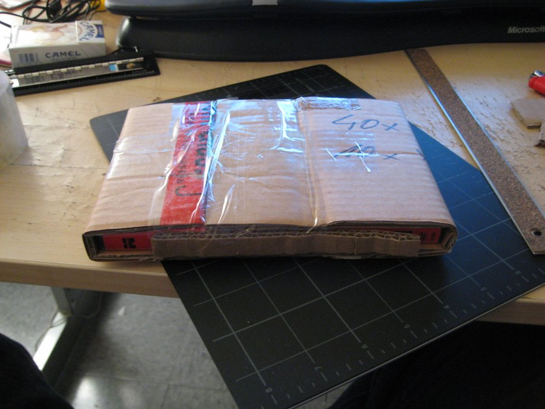

Memopezil Refund Policy: The 60-Day Money-Back Guarantee, Read Properly
A guarantee is only as useful as your ability to use it. Here's what Memopezil's covers, where it stops, and how to plan your trial so the deadline doesn't catch you out.

Key takeaways
- Official orders carry a 60-day money-back guarantee. It runs from the date of purchase, and our review notes it covers full, partly used or empty bottles.
- Marketplace and reseller purchases aren't covered. Only orders through the official checkout qualify.
- Keep your order number and confirmation email. They're the first thing any refund request will need.
- The fine print lives on the official terms page. Contact method, return steps and processing time should be confirmed there before you order.
- The deadline lands before bacopa's full window. Sixty days is about 8.5 weeks, and the main ingredient needs 8 to 12, so decide around week eight.
The Memopezil refund policy is a 60-day money-back guarantee on orders placed through the official checkout. Our review notes it applies whether bottles are full, partly used or empty. Purchases from Amazon, eBay or other resellers aren't covered. The exact contact and return steps are set out on the official terms page, so confirm them before ordering.
That's the short version. The longer one matters because most refund problems with supplements aren't about the policy itself. They're about timing, paperwork, and buying from the wrong place. This page walks through all three, using what our full Memopezil review found and flagging clearly where you need to check the seller's own terms.

Memopezil: check today's price
Five ingredients with every dose printed: BCAAs, bacopa, rhodiola, L-theanine and panax ginseng. Two capsules a day, stimulant-free. Sold only on the official site, with a 60-day money-back guarantee.
See the official price →What does Memopezil's 60-day guarantee cover?
Every package sold through the official checkout carries the same guarantee: 2 bottles, 3 bottles or 6. There's no special tier where the guarantee is longer or shorter. And because Memopezil is a one-time purchase with no subscription, there's no recurring charge to cancel alongside the refund.
The detail that makes it more usable than many guarantees is that it isn't limited to sealed bottles. According to our review, it holds whether the bottles are full, partly used or empty. That matters a lot for a product you have to take for weeks before you can judge it. A guarantee that only covered unopened bottles would be close to useless here.
So in practice, the guarantee is designed for exactly the situation most buyers end up in: you took it, you gave it a fair go, and you're not convinced.
What doesn't the refund policy cover?
Three things fall outside it, and each one catches people every year.
- Orders from anywhere other than the official checkout. Memopezil isn't sold on Amazon, Walmart, CVS or GNC. Any listing there is a reseller or a counterfeit, and the manufacturer has no record of that sale.
- Requests made after day 60. The window runs from the purchase date, not from the day you opened the first bottle.
- Anything the official terms exclude. Our source review doesn't spell out every condition, such as whether return shipping is refunded or whether the original shipping fee comes back. Those details are on the seller's terms page, and that's where you should check.
We'd rather tell you what we don't know than guess. If a review elsewhere states a 90-day window or quotes processing times to the day, compare it with the official terms page. Our review found at least one widely shared page listing a "90-day money-back guarantee" for Memopezil, alongside ingredients that aren't on the label. That's a sign the reviewer never looked.
Why only official orders qualify
It comes down to records. When you buy through the official checkout, the seller has your order, your payment and your shipping address. That's what lets them verify a refund request and send the money back to the right card.
A marketplace sale leaves them with none of that. They didn't take your money, so they can't return it. There's also a quality angle. Our review notes that marketplace listings under the Memopezil name are resellers or counterfeits, which means nobody can vouch for what's inside the bottle, how old it is, or how it was stored. A refund promise from an unknown seller is only as good as that seller.
How do you request a Memopezil refund?
The exact channel (email, phone or a form) is listed on the official terms or contact page, and it can change, so take it from there rather than from any third-party site. The steps below are the general order that works for almost any direct-to-consumer guarantee.
- Step 1. Find your order number. It's in the confirmation email sent at checkout. Search your inbox and spam folder for the order date.
- Step 2. Check your purchase date against the calendar. Count 60 days from purchase. If you're close, act today rather than this weekend.
- Step 3. Read the official terms page. Note the contact method, whether bottles must be sent back, and any return address or authorization number it asks for.
- Step 4. Send a short, dated request. Include your name, the email used at checkout, the order number, and a plain line asking for a refund under the 60-day guarantee. Email is best because it leaves a timestamped record.
- Step 5. Return the bottles only if the terms ask you to. If they do, use a trackable shipping method and keep the receipt and tracking number.
- Step 6. Save every reply. Keep the support emails, any reference number, and the date you shipped anything back.
- Step 7. Follow up if you hear nothing. Reply in the same email thread with your order number so the history stays together.
Keep the request short and factual. Something like this works: "Hello, I'd like a refund under the 60-day money-back guarantee. Order number: [your number]. Order date: [date]. Name and email on the order: [details]. Please let me know if you need the bottles returned and where to send them. Thank you." Unless the terms page asks for a reason, you don't need to write an essay. A calm, complete first message is easier for support to act on than a long one.
Send it from the same email address you used at checkout. That one detail saves a round of back-and-forth while support tries to match you to the order.
If you still get nowhere after a reasonable wait and a follow-up, your card issuer is the next stop. Most card companies have a dispute process for undelivered refunds. You'll need the paperwork from the steps above, which is why steps 1 and 6 matter more than they look.
What should you keep for a refund claim?
Start a folder, physical or digital, on the day you order. It takes two minutes and it's the single most useful thing you can do.
| Keep this | Why it matters | Where it comes from |
|---|---|---|
| Order confirmation email | Shows the order number and purchase date | Sent at checkout |
| Card or bank statement line | Proves the amount charged | Your bank |
| Delivery date | Helps you track how long you've been taking it | Shipping notice or your own note |
| Screenshot of the guarantee wording | Shows the terms that applied when you bought | Official order or terms page |
| Any return shipping receipt | Proves the bottles went back, if required | Post office or courier |
| Support emails and reference numbers | Shows when you asked and what you were told | Your inbox |
The screenshot is the one people forget. Terms pages get updated. A dated image of what the page said on your order day is the cleanest proof of what you were promised.
Is the 60-day window long enough to judge Memopezil?
Not quite, and this is the most important point on the page. The ingredient in Memopezil with the best memory evidence is bacopa monnieri. The trials that found a benefit ran 8 to 12 weeks, and shorter studies mostly came up empty. Our explainer on bacopa monnieri benefits covers why it works slowly.
Sixty days is about 8.5 weeks. So the refund window closes just as the evidence window is opening. You can't finish a full 12-week test and still have the guarantee available. That isn't a trick, it's just how the numbers fall, but you should plan around it.
Here's what we'd do:
- Start the first bottle the day it arrives. Every day it sits in the cupboard comes out of your trial, not out of the guarantee.
- Take a baseline score on our free 3-minute memory test before your first dose.
- Set a reminder for day 50. That gives you over a week to decide and file.
- Retake the test around week eight and compare. A score is a better guide than a vague impression.
- If you're unsure at that point, decide whether the guarantee or the extra four weeks of trial matters more to you. Either is a reasonable choice.
Does buying more bottles change your refund options?
All three packs carry the same 60-day guarantee. What changes is how much money is riding on it. With a 6-bottle order, you'll have taken only two of the six bottles by day 60. Whether unopened bottles are treated differently from used ones is a detail to confirm on the terms page.
| Pack | Total at published rates | Bottles used by day 60 | Bottles still sealed |
|---|---|---|---|
| 2 bottles | $158 + shipping | 2 | 0 |
| 3 bottles | $207 | 2 | 1 |
| 6 bottles | $294 | 2 | 4 |
The practical takeaway: the guarantee doesn't stretch with the pack size. A 6-bottle order is a six-month supply with a two-month safety net. If that gap makes you uneasy, a 3-bottle order is the better match for a first try. Our breakdown of the best memory supplements of 2026 compares guarantee lengths across the category if you want context.
How does Memopezil's refund policy compare with other brands?
Guarantees in this category vary more than prices do. Products sold through pharmacies and big-box stores, such as Prevagen and Neuriva, usually leave refunds to the retailer, so your options depend on where you shopped and how long ago. Onnit sets its own policy for Alpha Brain. Our pages on Prevagen alternatives and the other branded comparisons cover those in more depth.
Memopezil's 60 days comes from the manufacturer and applies to every official order, which our review counts as one of its real strengths. It's longer than many store return windows. It's still shorter than a full bacopa course, though, so it doesn't remove the timing problem described above.
Whatever you buy, read the guarantee as closely as the label. Check who honors it, how long it runs, and whether opened bottles count. Those three answers tell you how much risk you're really taking on.
Do Memopezil buyers report refund problems?
Our review looked through buyer complaints and found three common themes: the effect felt too subtle, it took too long, and people expected more. What it didn't find in volume were the complaints that would matter most here. There weren't clusters of refused refunds within the stated window, undelivered orders, or surprise recurring charges.
That's reassuring but not a promise. We can't see every customer's experience, and policies can change. Paperwork protects you either way.
When is a refund the right call?
A guarantee is there to be used. Using it isn't gaming the system. If you've taken Memopezil consistently for eight weeks and your before-and-after scores haven't moved, asking for your money back is exactly what the policy is for.
Stop earlier, and contact the seller about a refund, if the product disagrees with you. Our page on Memopezil side effects covers what's common, mostly mild stomach upset from bacopa and sleep trouble if taken late. Anything more than mild, stop and talk to your doctor. And if you started a new prescription while taking it, check for interactions; ginseng and rhodiola both have them.
One more case. If your memory is changing quickly or affecting daily life, a supplement isn't the right tool at any price. Get a medical evaluation. No supplement treats or prevents dementia, and Memopezil doesn't claim to.
Who probably shouldn't order in the first place
- Anyone who can't commit to at least eight weeks of daily use. You'd be relying on the refund rather than on a fair test.
- People taking blood thinners, diabetes or thyroid medication, antidepressants or sedatives without a doctor's OK.
- Anyone pregnant or breastfeeding.
- Shoppers who found it cheaper on a marketplace. The saving disappears the moment you need the guarantee.
Memopezil: check today's price
Five ingredients with every dose printed: BCAAs, bacopa, rhodiola, L-theanine and panax ginseng. Two capsules a day, stimulant-free. Sold only on the official site, with a 60-day money-back guarantee.
See the official price →Frequently asked questions
Can I get a refund if I've opened and used the bottles?
According to our review, the 60-day guarantee applies whether bottles are full, partly used or empty, as long as the order came through the official checkout. Confirm any return conditions on the official terms page before you file.
Does the 60 days start from purchase or delivery?
Our review describes the guarantee as running 60 days from purchase. Since shipping takes some of those days, start taking the capsules as soon as they arrive and note your order date in a calendar.
Is shipping refunded with the Memopezil guarantee?
Our source review doesn't specify whether original shipping or return shipping is refunded. That detail is set by the seller's terms page, so read it before ordering if it matters to you. Only the 2-bottle pack charges shipping in the first place.
What if I bought Memopezil on Amazon?
Memopezil isn't sold on Amazon or in retail stores. A listing there is a reseller or a counterfeit, and the manufacturer's guarantee doesn't cover it. Contact the marketplace about its own return rules instead.
Can I cancel a Memopezil subscription?
There's nothing to cancel. Memopezil is a one-time purchase with no subscription or auto-ship, so you won't be billed again unless you place a new order yourself.
How long does a Memopezil refund take to arrive?
Processing time isn't stated in our source review. Check the official terms page, and once you've filed, allow for the card network to post the credit. If nothing arrives after a follow-up, your card issuer's dispute process is the next step.
Should I keep taking Memopezil while the refund is processed?
That's your call, but if you've decided it isn't working for you, there's no benefit in finishing the bottles. If the terms require returning them, keep what's left together with the packaging.
Ordering? Do it through the official checkout
Only official orders carry the 60-day money-back guarantee. Save your confirmation email and screenshot the terms on the day you buy.
See Memopezil's official price →Related: Memopezil review 2026 · Memopezil side effects · How to take Memopezil · Free memory test · Best memory supplements of 2026
Image: caesararum / CC BY 2.0